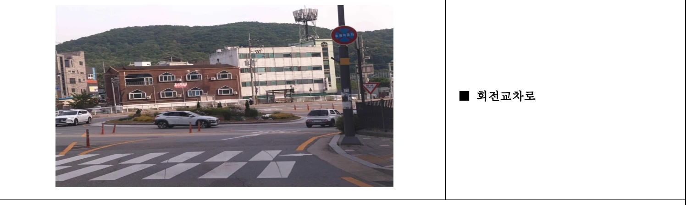

725. 在下列情况下，最安全的两种驾驶方法是？

- ①在环形交叉口只有顺时针方向行驶才安全。
- ②准备驶入环形交叉口时，应先慢行或停车等待。
- ③在环形交叉口内行驶的车辆应礼让准备进入环形交叉口的车辆。
- ④准备从环形交叉口驶出时，不打开转向灯，直接照常驶出。
- ⑤为驶入环形交叉口，如有车辆打开转向灯，则后车不能妨碍前车行驶。
查看答案
答案
② 准备驶入环形交叉口时，应先慢行或停车等待。
⑤ 为驶入环形交叉口，如有车辆打开转向灯，则后车不能妨碍前车行驶。
依据
在环岛，交通必须逆时针行驶。进入环岛时，必须减速或暂时停车，如果有其他车辆已经行驶，则必须给该车辆让路。如果有一辆汽车用手势、方向灯或灯光发出信号要通过环岛，则该信号后面的汽车的驾驶员不得阻碍该信号前面的汽车的前进。出入环岛时，必须开启转向灯（道路交通法第25条之2）。
依据文字为学习用机器翻译。